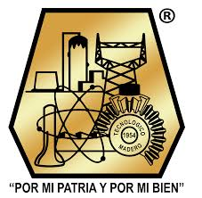
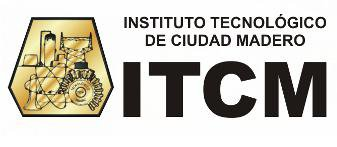
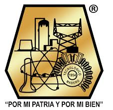
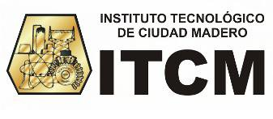

Av.Primero de Mayo 1610
Los Mangos
89460 Cd. Madero
Tamps.
La primera piedra de la institución fue colocada el 20 de noviembre de 1950,
pero sus actividades educativas iniciaron en 1954 ofreciendo cursos técnicos.
En 1956 se iniciaron los programas a nivel licenciatura en Ingeniería Química,
Eléctrica y Mecánica. La historia del ITCM inicia con la labor del Ing. Luis
Hidalgo y Castro, quien concibió la idea de fundar una casa de estudios técnicos
que permitiera a los jóvenes de la región recibir una formación profesional del
más alto nivel sin tener que emigrar a otras ciudades. Tras vencer múltiples
obstáculos de carácter político, económico y social, se hizo posible reunir
inicialmente la cantidad de 25 mil pesos, que fue el principio virtual del
Instituto Tecnológico de Ciudad Madero. Posteriormente, gracias a la
colaboración de las Secciones Petroleras de la Zona Norte, se logró reunir
un millón de pesos del patronato en 1950. En el mes de septiembre de ese mismo
año, el entonces Presidente de la República, Lic. Miguel Alemán Valdés,
autorizó el convenio tripartito en el que se establecería la cooperación
de PEMEX, la Secretaría de Educación Pública y el Patronato, cada uno con
un millón de pesos, para la construcción del instituto, bajo la supervisión
del Instituto Politécnico Nacional.